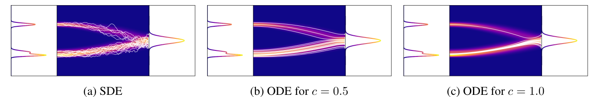
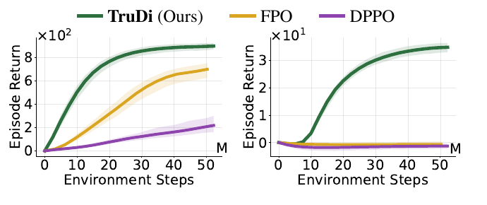
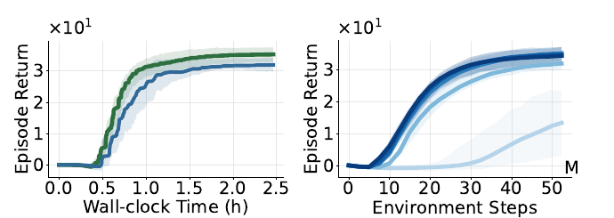
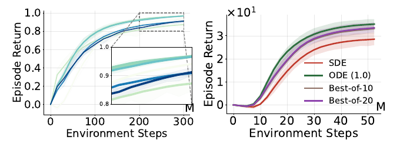

Reinforcement learning with massively parallel simulations has become a standard framework for developing robust, deployable policies; however, most existing approaches still rely on simple Gaussian policy parameterizations. Diffusion models provide a more expressive policy class and have shown strong performance on challenging control problems, yet most diffusion-based RL methods are designed for offline or off-policy training.
In this work, we ask whether diffusion policies can be trained effectively in the massively parallel, on-policy regime. To this end, we introduce Trust-region Diffusion Policies (TruDi), which enables diffusion policies for on-policy RL with massively parallel simulations. This setting is particularly challenging because the data distribution changes quickly across updates, making stable training with complex policies difficult. TruDi addresses this by integrating a trust-region optimization rule to enforce a KL-divergence constraint over the entire diffusion trajectory.
Empirically, we evaluate TruDi on a diverse set of 4 massively parallel RL benchmarks comprising a total of 73 tasks. Across these tasks, TruDi consistently outperforms or is on-par with strong baselines on standard tasks and achieves clear gains on more challenging humanoid control tasks, establishing a strong new baseline for massively parallel on-policy RL.
Trust-region constraints are essential for stable on-policy RL: they prevent premature convergence when the data distribution shifts rapidly between updates. Enforcing them requires the policy's action likelihood, which is intractable for diffusion policies because the executed action is the marginal of the full reverse denoising chain. Prior diffusion-RL methods therefore train off-policy with large replay buffers, which reintroduces the memory bottleneck that massively parallel on-policy training avoids.

Scaling the score function induces greedier sampling. Trajectories of the denoising process from the Gaussian prior (right) to the target action distribution (left). (a) stochastic SDE sampling; (b) the probability-flow ODE with score scale c = 0.5 matches the SDE's marginals; (c) c = 1.0 sharpens the intermediate marginals and concentrates trajectories on the modes. In practice this yields higher returns at evaluation time.
The aggregated comparison across all 73 tasks is shown in the teaser figure above. TruDi and REPPO form the top tier on standard control (DMC, ManiSkill3, IsaacLab), while on the humanoid suites TruDi opens a clear gap over every baseline. The largest gains appear on the hardest environments (window cleaning, balancing, hurdling, and cube), where Gaussian baselines frequently plateau early. The sections below look at individual findings in more detail.
We also compare against two methods with expressive generative policies: DPPO, which applies PPO-style clipping to diffusion policies, and FPO, which uses flow matching. On the DMC suite, TruDi achieves comparable or better sample efficiency than FPO and clearly outperforms DPPO. This gap becomes much more pronounced on the high-dimensional Humanoid tasks, where DPPO and FPO make little progress while TruDi learns reliably.
These results suggest that the trajectory-level trust-region formulation, rather than per-step clipping, is what makes expressive policies viable in the massively parallel on-policy setting.

Left: MuJoCo Playground DMC. Right: MuJoCo Playground Humanoid, where the gap is most pronounced.
PushT (rotating a T-block 180°, where clockwise and counter-clockwise are both optimal) and StackCube (where red-on-blue and blue-on-red are both optimal) each have two symmetric optimal solutions. Behavior entropy over 200 deterministic runs measures whether a policy captures both modes (1 = perfectly balanced, 0 = mode collapse). Best results highlighted in orange.
| Task | Method | Entropy ↑ | Episode Return |
|---|---|---|---|
| PushT | REPPO | 0 | 154.92 ± 5.85 |
| DIME | 0.20 ± 0.20 | 171.92 ± 1.08 | |
| TruDi | 0.32 ± 0.13 | 167.32 ± 4.42 | |
| StackCube | REPPO | 0 | 83.92 ± 0.24 |
| DIME | 0.68 ± 0.15 | 84.40 ± 0.69 | |
| TruDi | 0.87 ± 0.08 | 84.69 ± 0.10 |
The Gaussian baseline collapses to a single deterministic solution (entropy 0) on both tasks. TruDi captures both modes without sacrificing return.
PushT: the two rotation directions, one per mode
StackCube: blue-on-red and red-on-blue solutions
Each environment admits two equivalent optimal strategies, creating a bimodal optimization problem.
| Method | Training Time (h) | Episode Return (IQM) |
|---|---|---|
| PPO | 0.95 ± 0.35 | 0.1 ± 3.7 |
| REPPO | 1.07 ± 0.35 | 29.6 ± 7.2 |
| DIME | 1.38 ± 0.36 | 15.6 ± 9.4 |
| TruDi (Ours) | 1.95 ± 0.46 | 34.8 ± 3.0 |
Wall-clock cost and performance after 50M steps on MuJoCo Playground Humanoid. TruDi achieves the highest performance with a manageable increase in training duration.

Left: wall-clock comparison ( TruDi, REPPO): under a strictly matched budget (≈ 2.5 h), TruDi still substantially outperforms REPPO, and extending REPPO's training to 150M steps yields no further improvement. Right: diffusion-step ablation for TruDi, T ∈ {1, 4, 8, 16, 32}; line color encodes the step count, from T = 1 (light) to T = 32 (dark). T = 1 fails to learn and performance saturates at T = 8.
TruDi's advantage stems from the expressiveness of the diffusion policy and the stability of the trust-region updates rather than from additional compute time.
Sensitivity to the trust-region threshold. We sweep ε from 0.01 to 50 on IsaacLab. When the constraint is too loose, the update behaves like the unconstrained case and final return drops clearly; when it is too strict, learning slows down. A broad intermediate band (ε ≈ 0.1 to 0.4) works best.
Evaluation strategies. The probability-flow ODE with score scale c = 1.0 consistently outperforms SDE sampling and best-of-K selection with the learned Q-function (K = 10, 20). Tracing deterministically to the mode of the policy distribution is more reliable than sampling around it.

Left: threshold sweep on IsaacLab; line color encodes ε on a log scale, from ε = 0.01 (strict) through the best-performing band ε ≈ 0.1–0.4 to ε = 50 (loose). Right: evaluation strategies on MuJoCo Playground Humanoid: SDE sampling, ODE (c = 1.0), best-of-10, best-of-20.